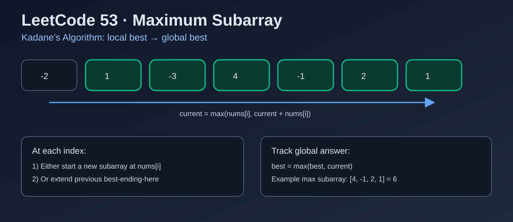

LeetCode 53: Maximum Subarray (Kadane's Algorithm)
LeetCode 53ArrayDPKadaneToday we solve LeetCode 53 - Maximum Subarray, a classic interview question that looks simple but reveals strong DP thinking.
Source: https://leetcode.com/problems/maximum-subarray/

English
Problem Summary
Given an integer array nums, find the contiguous subarray (containing at least one number) which has the largest sum, and return that sum.
Key Insight
For each index i, the best subarray ending at i has only two choices:
1) Start new at nums[i].
2) Extend the previous best ending at i-1.
This gives the transition: current = max(nums[i], current + nums[i]). Track a global maximum while scanning once.
Brute Force and Why Insufficient
Brute force enumerates all subarrays and computes sums:
- With prefix sums: O(n^2) time, O(n) space.
- Triple loop naive sum: O(n^3) time.
For large n, O(n^2) is still too slow in interviews and production constraints. We need linear time.
Optimal Algorithm (Step-by-Step)
Kadane's algorithm:
1) Initialize current = nums[0], best = nums[0].
2) Iterate i from 1 to n-1:
a) current = max(nums[i], current + nums[i]).
b) best = max(best, current).
3) Return best.
Complexity Analysis
Time: O(n) — one pass.
Space: O(1) — only scalar variables.
Common Pitfalls
- Incorrectly resetting current to 0 (fails all-negative arrays).
- Initializing best to 0 instead of nums[0].
- Confusing “maximum subsequence” with “maximum subarray” (must be contiguous).
- Integer overflow in some languages if constraints are larger than 32-bit.
Reference Implementations (Java / Go / C++ / Python / JavaScript)
class Solution {
public int maxSubArray(int[] nums) {
int current = nums[0];
int best = nums[0];
for (int i = 1; i < nums.length; i++) {
current = Math.max(nums[i], current + nums[i]);
best = Math.max(best, current);
}
return best;
}
}func maxSubArray(nums []int) int {
current := nums[0]
best := nums[0]
for i := 1; i < len(nums); i++ {
if current+nums[i] > nums[i] {
current = current + nums[i]
} else {
current = nums[i]
}
if current > best {
best = current
}
}
return best
}class Solution {
public:
int maxSubArray(vector<int>& nums) {
int current = nums[0];
int best = nums[0];
for (int i = 1; i < (int)nums.size(); ++i) {
current = max(nums[i], current + nums[i]);
best = max(best, current);
}
return best;
}
};class Solution:
def maxSubArray(self, nums: List[int]) -> int:
current = nums[0]
best = nums[0]
for i in range(1, len(nums)):
current = max(nums[i], current + nums[i])
best = max(best, current)
return best/**
* @param {number[]} nums
* @return {number}
*/
var maxSubArray = function(nums) {
let current = nums[0];
let best = nums[0];
for (let i = 1; i < nums.length; i++) {
current = Math.max(nums[i], current + nums[i]);
best = Math.max(best, current);
}
return best;
};中文
题目概述
给定整数数组 nums，找到一个“连续子数组”（至少包含一个元素），使其元素和最大，返回这个最大和。
核心思路
对于每个位置 i，以 i 结尾的最优解只有两种选择：
1）从 nums[i] 重新开一个新子数组；
2）把 nums[i] 接到前一个位置的最优“结尾子数组”后面。
状态转移：current = max(nums[i], current + nums[i])，同时维护全局最大值 best。
暴力解法与不足
暴力方法是枚举所有区间：
- 使用前缀和可做到 O(n^2) 时间；
- 三层循环直接累加是 O(n^3)。
即使是 O(n^2)，在较大输入下也不够高效；面试更期待 O(n) 解法。
最优算法（步骤）
Kadane 算法步骤：
1）初始化：current = nums[0]，best = nums[0]。
2）从下标 1 开始遍历：
a）current = max(nums[i], current + nums[i])；
b）best = max(best, current)。
3）遍历结束返回 best。
复杂度分析
时间复杂度：O(n)（单次遍历）。
空间复杂度：O(1)（只用常量变量）。
常见陷阱
- 把 current 错误重置为 0，导致全负数组出错。
- 把 best 初始化为 0，而不是 nums[0]。
- 把“子序列”（可不连续）和“子数组”（必须连续）混淆。
- 某些语言在更大约束下要考虑整数溢出问题。
多语言参考实现（Java / Go / C++ / Python / JavaScript）
class Solution {
public int maxSubArray(int[] nums) {
int current = nums[0];
int best = nums[0];
for (int i = 1; i < nums.length; i++) {
current = Math.max(nums[i], current + nums[i]);
best = Math.max(best, current);
}
return best;
}
}func maxSubArray(nums []int) int {
current := nums[0]
best := nums[0]
for i := 1; i < len(nums); i++ {
if current+nums[i] > nums[i] {
current = current + nums[i]
} else {
current = nums[i]
}
if current > best {
best = current
}
}
return best
}class Solution {
public:
int maxSubArray(vector<int>& nums) {
int current = nums[0];
int best = nums[0];
for (int i = 1; i < (int)nums.size(); ++i) {
current = max(nums[i], current + nums[i]);
best = max(best, current);
}
return best;
}
};class Solution:
def maxSubArray(self, nums: List[int]) -> int:
current = nums[0]
best = nums[0]
for i in range(1, len(nums)):
current = max(nums[i], current + nums[i])
best = max(best, current)
return best/**
* @param {number[]} nums
* @return {number}
*/
var maxSubArray = function(nums) {
let current = nums[0];
let best = nums[0];
for (let i = 1; i < nums.length; i++) {
current = Math.max(nums[i], current + nums[i]);
best = Math.max(best, current);
}
return best;
};
Comments